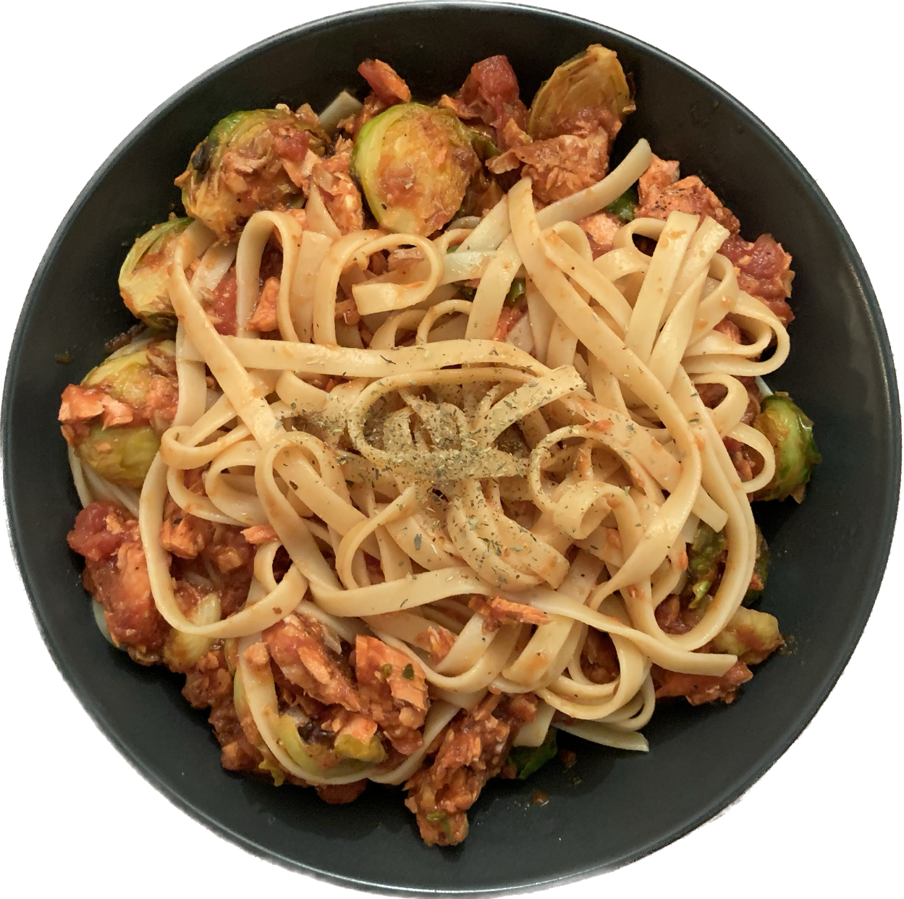

PASTA (SALMON + BRUSSELS)

Fettuccine pasta
Brussels sprouts
salmon
pasta sauce
1. Add water to a pot and turn the heat to high.
2. Once the water boils, add pasta and let it cook for 10 minutes.
Add some salt.
3. Slice Brussels in halves.
4. Pan fry or air fry seasoned Brussels for about 8 to 10 minutes.
5. Pan fry or air fry seasoned salmon for about 7 to 8 minutes.
6. Drain the water out of the pasta pot, and mix in pasta sauce.
7. Once the salmon is done cooking, flake it using a fork.
8. Plate the pasta, flaked salmon, and Brussels sprouts.